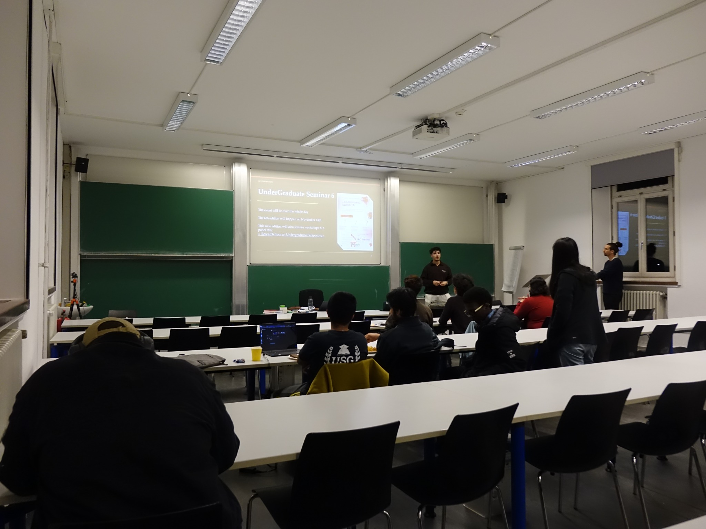
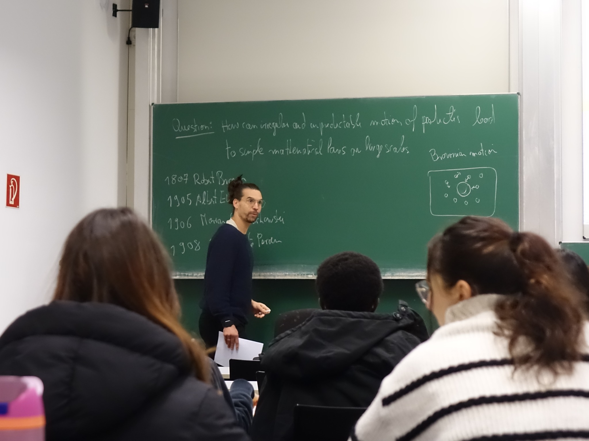
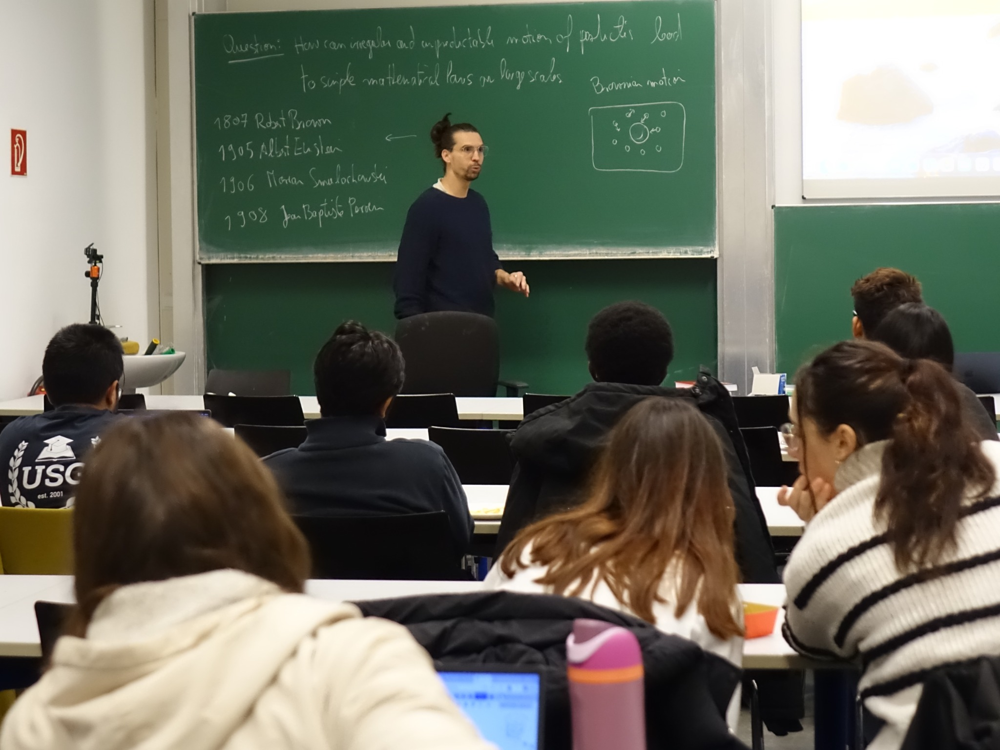
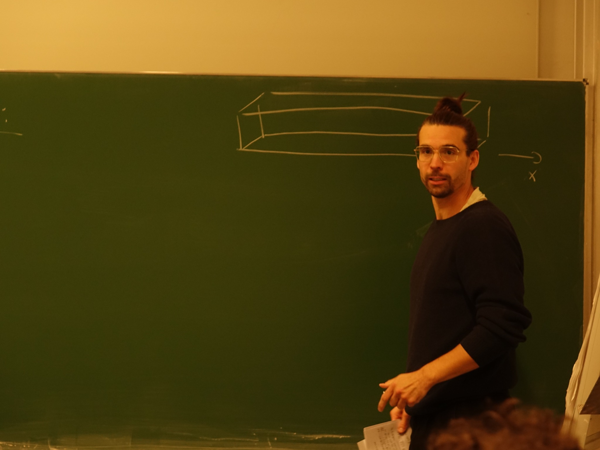
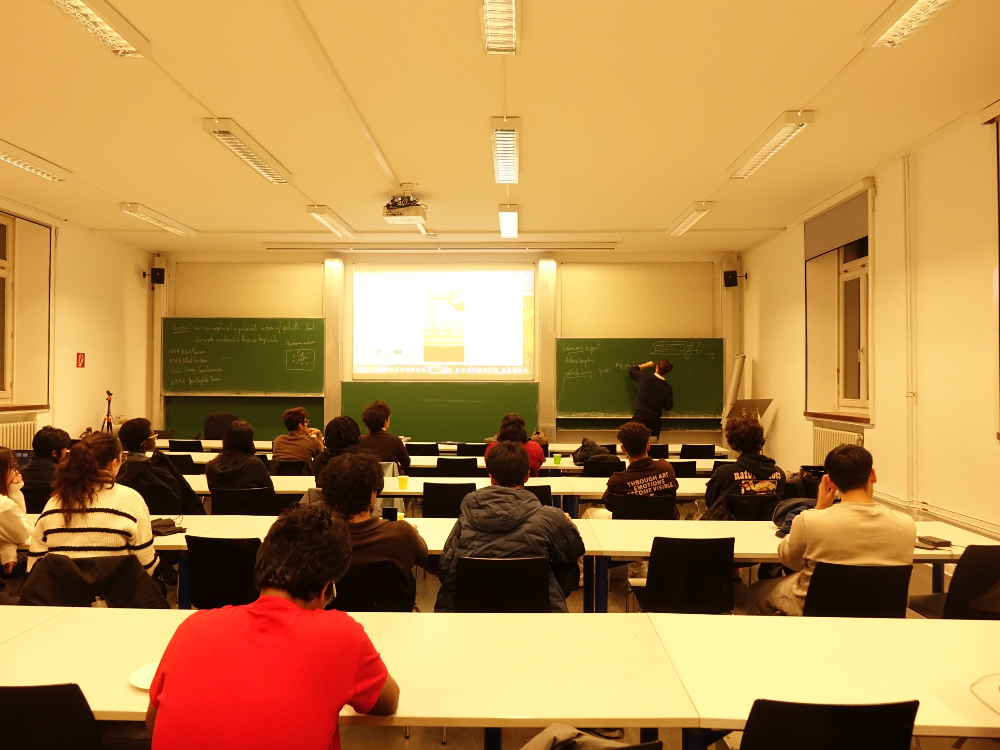
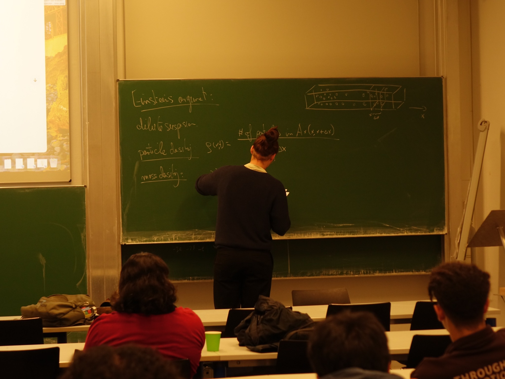
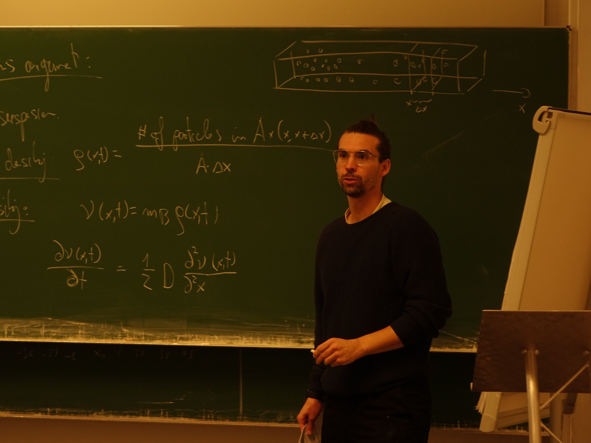
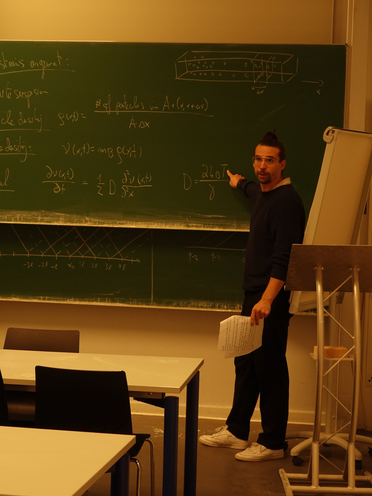
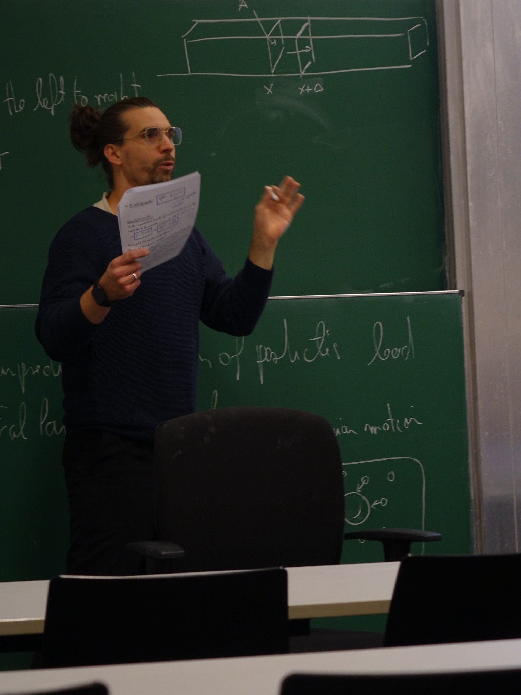

How the unpredictable motion of individual particles gives rise to the physical laws we observe at large scales.
A single particle can move unpredictably. Yet a huge collection of particles can follow remarkably simple laws. This talk explored how the seemingly random motion of microscopic objects can give rise to predictable behavior on a larger scale.

The speaker introduces Brownian motion and the challenge of explaining large-scale behavior.
Imagine a tiny particle suspended in a liquid. Molecules continually collide with it from different directions, causing its path to jitter. Following each collision is extraordinarily difficult. But if we consider many particles together, patterns begin to emerge.

The lecture connects Brownian motion with the history of mathematical physics.
The discussion touched on important milestones: Robert Brown’s observations of irregular particle movement, Albert Einstein’s theoretical treatment, Marian Smoluchowski’s work on the same phenomenon, and Jean Perrin’s experimental contributions. Together, these developments helped connect the invisible microscopic world with measurable effects.

Students follow a discussion of Brownian motion and its historical development.
Instead of tracking every particle individually, we can count how many are found inside a small region. Dividing by that region’s volume gives a particle density. When the region is small enough to show local differences—but still contains many particles—density becomes a useful description of the system.

The lecturer explains a small region inside a larger collection of particles.
A density field describes how crowded different parts of a system are. It lets us ask questions such as: Where are particles concentrated? Where are they sparse? How does that distribution change with time?

A classroom view of the particle-density argument.
Particles moving randomly tend to spread out from regions of high concentration toward regions of lower concentration. On a large scale, this redistribution can be described by a diffusion equation rather than by following countless individual trajectories.

The board shows the mathematical description of diffusion and density.
The lecture introduced a diffusion equation of the form ∂ν/∂t = (D/2) ∂²ν/∂x², where ν represents a density-related quantity and D controls how quickly spreading occurs. The second spatial derivative describes how the shape of the distribution influences its evolution.

A closer view of the diffusion equation on the chalkboard.
The same style of reasoning appears throughout physics and applied mathematics. When microscopic interactions are too numerous to track, quantities such as density, averages, and rates can still yield powerful predictions.

The lecturer points to the diffusion coefficient in the mathematical model.
The talk showed why mathematical modeling is more than a collection of formulas. It allows us to move between descriptions: from individual particles, to statistical patterns, to laws that can be used to explain the world we observe.

The speaker discusses the particle model with the audience.
Next time, come in person — even the diffusion equation cannot transport the experience to your screen.